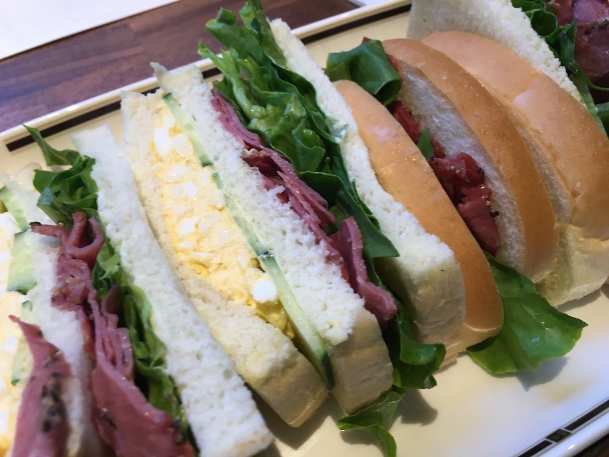

Unity Editor上で非同期テストしたいからMiyamasuっての作った
概要
5.3からテストユニット入ってたのガン無視してテストツール自作してた。
理由はまあCoreCLRでも動く非同期/同期待ちを頑張ったやつが使いたかったからなんだけど、
Unity5.3から標準でNUnit入ってるんでじゃあどっちでも使えば良いじゃんってなってやっと手をつけた。
んだけど、今組み込まれてるテストツールでも単体だとまだ非同期のテスト書けねえのな、、がっかり。
結局自作したテストツール整備してたら公開できる感じになったのでそんだけ。
エディタでだけでもasync使えれば
って思ってたんだけどまだダメみたいだな、、まあいいや。
というわけで、アノテーション書けば適当に依存なしでUnityからCoreCLRまで一貫して動く自作してたやつを書いた。
Annotation絡みの実装を一回やってみたかったっていうのもある。
急いで作って急いで使って、Editorでasyncが書けるようになったら捨てる。
Miyamasu
https://github.com/sassembla/Miyamasu
画像は最近宮益坂にできたコメダの宮益坂 ミックスサンド
名前に悩んでたらちょうどこれ食ってたのでMiyamasuにした。

美味しいが馬鹿でかい。
写ってる部分で全体の半分くらい。
2人分くらいある。これで770円は安い、、、